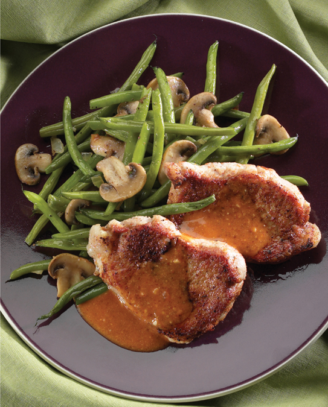

← Back to index
Jerked Pork Tenderloins

Servings: 6 TO 8
Ingredients
- The Paste:
- 1 large onion, cut in 16 pieces
- 2 large jalapeño peppers, stems and seeds removed
- 2 large cloves garlic
- 1 medium bunch scallions, white parts plus 4 inches of green, sliced
- 2 teaspoons dried thyme
- 1 teaspoon ground allspice
- ¼ teaspoon ground nutmeg
- 1 teaspoon ground cinnamon
- 1 tablespoon kosher salt
- 1 teaspoon black pepper
- 1 tablespoon brown sugar
- 1 tablespoon olive oil
- ¼ cup soy sauce
- Juice of ½ lime
- The Pork:
- 4 pork tenderloins (about 2 ¾ pounds)
- The Sauce:
- ½ cup reserved jerk paste
- 1 cup Mutha Sauce
- ⅓ cup water
Instructions
- Slice each tenderloin lengthwise along the grain into 3 even slices. Pound each slice lightly with the edge of a mallet to make indentations on both sides without opening holes in the meat.
- Save ½ cup of jerk paste for the sauce. Place the tenderloins in a nonreactive pan and rub the remaining jerk paste into all sides. Cover and marinate in the fridge for at least 4 hours or all day, if possible.
- Fire up the grill good and hot. Throw all the ingredients for the sauce into a small saucepan and bring the mixture to a gentle simmer. Let it bubble for 15 minutes. Keep warm.
- Scrape off most of the jerk paste from the meat so it doesn’t stew on the grill. Place the tenderloin slices directly over the coals and grill til the meat reaches an internal temperature of 145° to 150° (see Cookin’ Perfect Pork ), 4 to 5 minutes on each side.
- Take the tenderloins off the grill, cut them into serving-size pieces, and pass them around with lots of sauce.